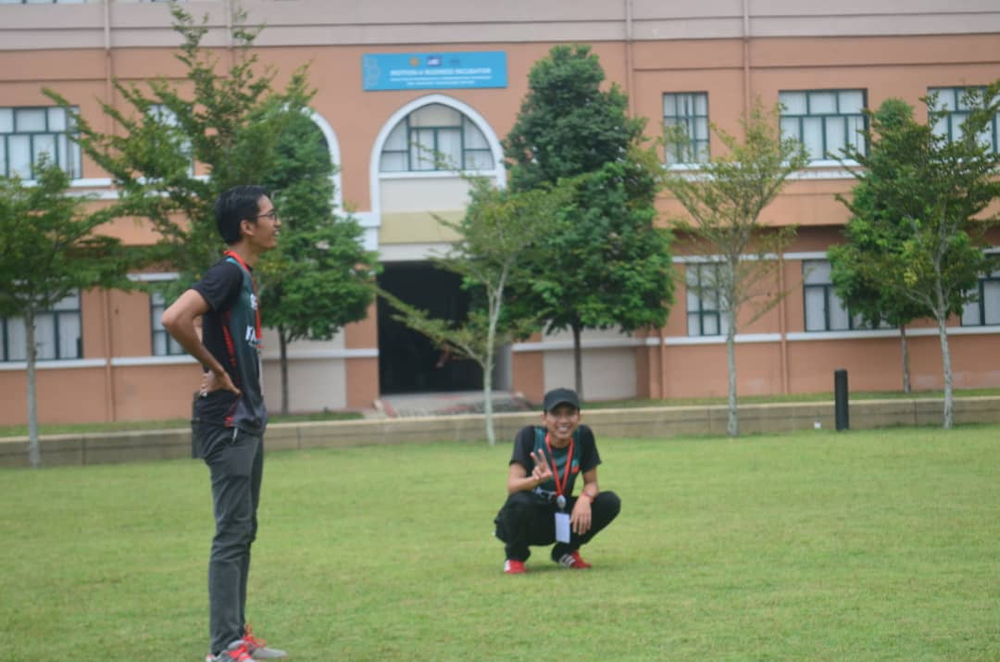

Name: Syahmi Bin Kamarul Baharin
Matric No: 1712939
Birth date: 29/12/1997
Address: No 33 Jalan 4/10B Seksyen 4, 43650, Bandar Baru Bangi, Selangor
Current University: IIUM
Current Year: 2 year
Hobby: Model Building
My Favourite Quote:
" The truth is you don’t know what is going to happen tomorrow. Life is a crazy ride, and nothing is guaranteed. "
What i Like
There are so many things that i like to do, but the most favourable things is playing games. The type of games that i love to play is fighthing games.
This is one of the game that i played.
What i Dislike
What i dislike is eating seafood. Because i allergic to it. But looking at someone eating seafood especially fried squid. It is so tempting.
Look at the pictue makes my mouth watery